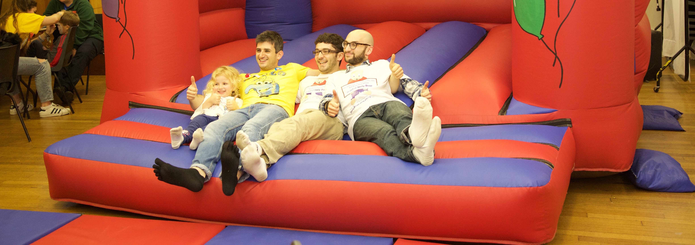

Our Next Blood Donor Session
Our next session will be held on Sunday 27th November 2016 at Borehamwood & Elstree Synagogue. As always, there will be face painting and a bouncy castle, so bring the whole family along to #GiveBloodNotExcuses!

Joely Bear Celebrates 21st Anniversary
200 people joined us in the beautiful Shenley Chapel to celebrate our 21st birthday! Supporters enjoyed a fish and chips dinner before dancing the night away with the Joely Bear band to some all time favourites.